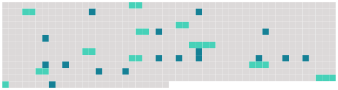

Longueur nb maillons : 27 mentions |
 |
Le secrétaire de la mairie décida qu'elle était vêtue d'une peau de panthère, et l'adjoint [du maire] trouva fort probable que ce fût la duchesse de Berry. [2 phrases] [Le maire] , assassiné de questions par les dames de [sa] famille, trouva un expédient merveilleux pour satisfaire leur curiosité et la sienne propre. [Il] ordonna au maître de poste de ne délivrer de chevaux à l'étrangère que sur le vu de son passe-port. [3 phrases]
Les esprits furent très-agités ; [le maire] craignit une émeute ; le procureur du roi intima à la gendarmerie l'ordre de se tenir sur pied, et les chevaux de l'ordre public eurent la selle sur le dos tout le jour. [1 phrases] disait [le maire] , [qui] était un homme de mœurs douces et un cœur sensible envers le beau sexe.
[Je] ne puis envoyer un gendarme pour examiner brutalement les papiers d'une dame! — À [votre] place, je ne m'en gênerais pas!! [3 phrases]
La mairesse tint conseil avec les femmes des autres autorités, et il fut décidé que [M. le maire] irait en personne, avec toute la politesse possible, et s'excusant sur la nécessité d'obéir à des ordres supérieurs, demander à l'inconnue son passe-port. [Le maire] obéit, et se garda bien de dire que ces ordres supérieurs étaient ceux de [sa] femme. [1 phrases] fut un peu effrayée de cette démarche ; Pauline, qui la comprit fort bien, en fut inquiète et blessée ; Laurence ne fit qu'en rire, et, s'adressant [au maire] , elle [l'] appela par [son] nom, [lui] demanda des nouvelles de toutes les personnes de [sa] famille et de [son] intimité, [lui] nommant avec une merveilleuse mémoire jusqu'au plus petit de [ses] enfants, [l'] intrigua pendant un quart d'heure, et finit par s'en faire reconnaître. Elle fut si aimable et si jolie dans ce badinage, que [le bon maire] en tomba amoureux comme un fou, voulut lui baiser la main, et ne [se retira] que lorsque madame D … et Pauline [lui] eurent promis de [le] faire dîner chez elles ce même jour avec la belle actrice de la capitale. [2 phrases] Elle raconta mille historiettes plaisantes sur ses voyages en province, et même, au dessert, elle consentit à réciter à [M. le maire] des tirades de vers classiques qui [le] jetèrent dans un délire d'enthousiasme dont madame la mairesse eût été sans doute fort effrayée. |
 |
La ressource peut être téléchargée sur la page Ortolang
Si vous avez des questions ou vous voyez des erreurs, merci d'envoyer un mail à silvia.federzoni89@gmail.com
Site développé par S. Federzoni (contact)